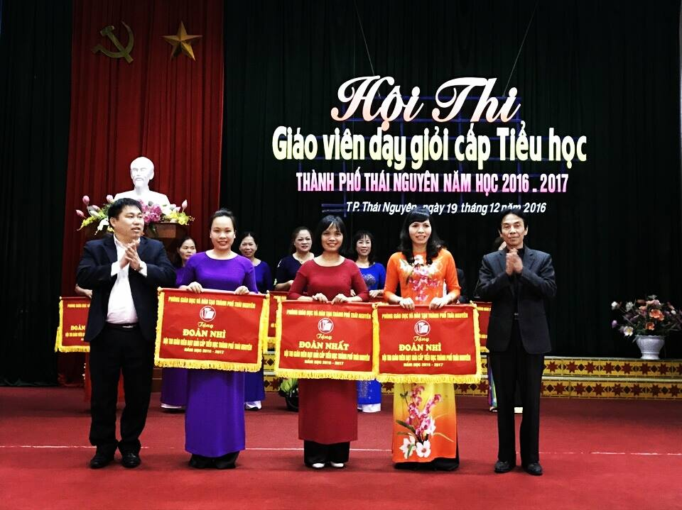
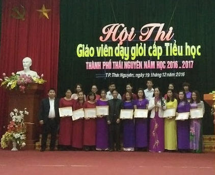

Tổng kết hội thi Giáo viên dạy giỏi cấp Thành Phố năm học 2016-2017

Dự buổi tổng kết Hội thi có các đồng chí Lãnh đạo Phòng Giáo dục Đào tạo thành phố Thái Nguyên, Lãnh đạo Công đoàn ngành giáo dục và đào tạo, Lãnh đạo Hội khuyến học thành phố Thái Nguyên. Đại diện Công ty thiết bị giáo dục Linh Phượng, Hiệu trưởng, Phó Hiệu trưởng các trường tiểu học trên địa bàn thành phố và các giáo viên tham gia dự thi. Hội thi giáo viên dạy giỏi cấp tiểu học thành phố Thái Nguyên được tổ chức từ ngày 01/12/2016 đến hết ngày 14/12/2016 với 113 giáo viên được tuyển chọn qua hội thi của 33 trường tiểu học trên địa bàn thành phố. Mỗi thầy cô giáo dự thi phải trải qua 3 phần thi chính gồm: Báo cáo sáng kiến kinh nghiệm hoặc đề tài nghiên cứu khoa học sư phạm ứng dụng đã triển khai, được đánh giá có hiệu quả trong thời gian 2 năm gần nhất; bài kiểm tra năng lực và thi thực hành giảng dạy 2 tiết theo phân phối chương trình.
Trường Tiểu học Nha Trang có 7 giáo viên tham gia dự thi. Với sự cổ vũ của tập thể sư phạm nhà trường và sự cố gắng nỗ lực của từng cá nhân, các giáo viên trong đoàn dự thi đã đạt được kết quả cao trong hội thi. Giáo viên Nguyễn Lê Vân là thí sinh duy nhất của Hội thi đạt điểm tối đa trong phần kiểm tra năng lực: 10/10 điểm. Có 3 tiết dạy đạt điểm tối đa 20/20 điểm là các tiết dạy: Địa lý lớp 5: Thương mại và du lịch (Đ/c Vũ Thị Hường); Bài Tự nhiên và Xã hội lớp 2: Trường học (Đ/c Lương Thị Thu Thủy); Bài Tự nhiên và Xã hội lớp 3: Hoạt động nông nghiệp (Đ/c Đông Thị Thúy). Kết thúc Hội thi 7/7 giáo viên dự thi đều đạt danh hiệu Giáo viên dạy giỏi cấp thành phố trong đó có 3 giáo viên đạt danh hiệu Giáo viên Giỏi Xuất sắc cấp thành phố năm học 2016 – 2017 là: Phạm Thị Mến (Tổ khối 1); Lương Thị Thu Thủy (Tổ khối 2-3); Vũ Thị Hường (Tổ khối 4-5). Bốn giáo viên đạt danh hiệu giáo viên dạy giỏi cấp thành phố năm học 2016-2017 là: Lương Thị Thu Hiền; Nguyễn Lê Vân; Nông Thị Thương và Đông Thị Thúy. Với kết quả xuất sắc của các giáo viên, đoàn thi của trường Tiểu học Nha Trang đã xuất sắc đạt giải Nhất toàn đoàn./.
Một số hình ảnh trong buổi tổng kết hội thi:

Các giáo viên đạt giải Xuất sắc nhận giấy chứng nhận của Hội thi